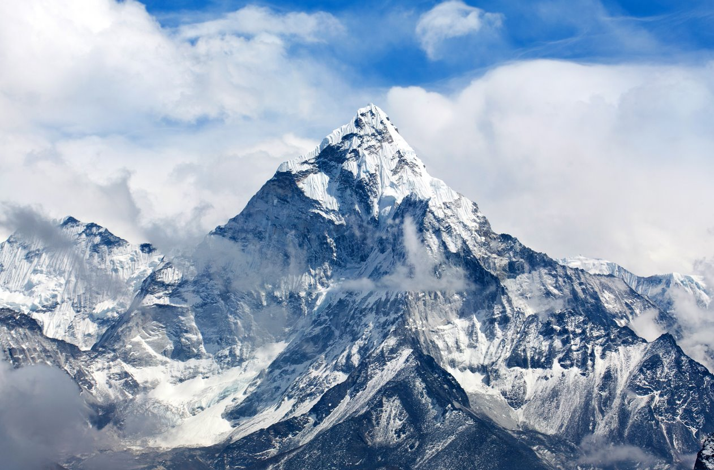
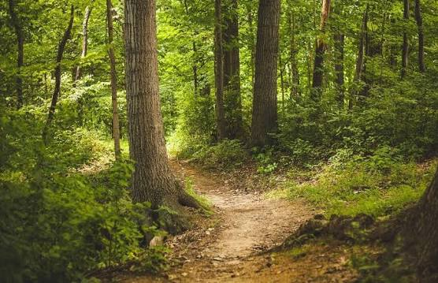
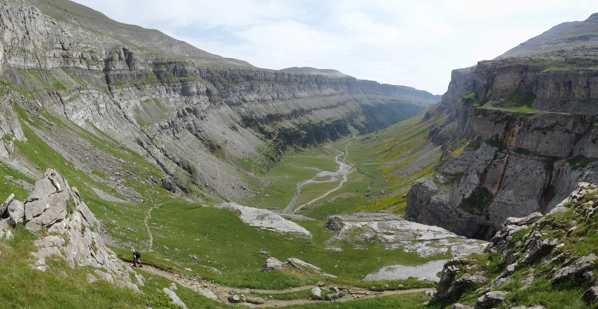

⛰️ Montañas Aventura
Las montañas son gigantes silenciosos que han acompañado a la humanidad desde siempre. Sus cumbres, muchas veces cubiertas de nieve, parecen tocar el cielo y nos recuerdan lo pequeños que somos.
Subir una montaña es un reto físico y mental. Cada paso exige paciencia, y la recompensa al llegar a la cima es una vista que ninguna fotografía logra capturar por completo.
Además de ser hermosas, las montañas son hogar de una enorme variedad de plantas y animales, y de ellas nacen muchos de los ríos que llevan agua a pueblos y ciudades enteras.

La cumbre
El punto más alto, donde el aire es frío y el paisaje se extiende hasta el horizonte.

El sendero
Caminos de tierra y piedra que invitan a avanzar con calma y disfrutar el trayecto.

El valle
Al pie de las montañas se forman valles verdes llenos de vida y de silencio.